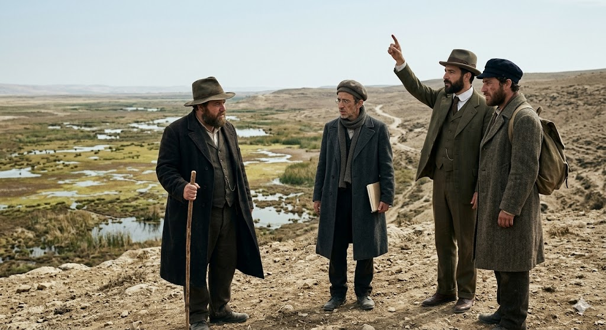

ההיסטוריה של המושבות העבריות
מסע מחקרי מעמיק אל שורשי ההתיישבות בארץ ישראל. החל מהחזון האידאולוגי, דרך האנשים שהפכו חלום למציאות, ועד למקורם האטימולוגי המרתק של השמות שכולנו מכירים. פרויקט זה נועד לשמר ולהציג את המידע בצורה מקיפה, נגישה ומדויקת.
אינדקס מושבות
בחר מושבה למחקר
מאגר המידע נבנה בהדרגה. כל כרטיס יוביל למחקר מקיף הכולל רקע, אישים, אטימולוגיה ועוד.

פתח תקווה
1878"אם המושבות" - המושבה העברית הראשונה בארץ ישראל בעת החדשה. סמל לחלוציות, חקלאות ועקשנות אל מול קשיי הטבע.
ראשון לציון
1882"אם המושבות". מידע מקיף יתווסף בהמשך הפרויקט.
זכרון יעקב
1882מפעל חייו של הברון רוטשילד. מידע מקיף יתווסף בהמשך.